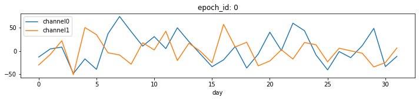
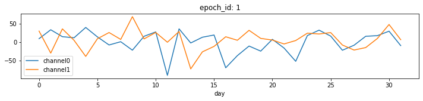
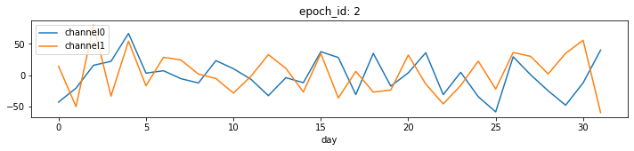
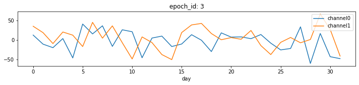
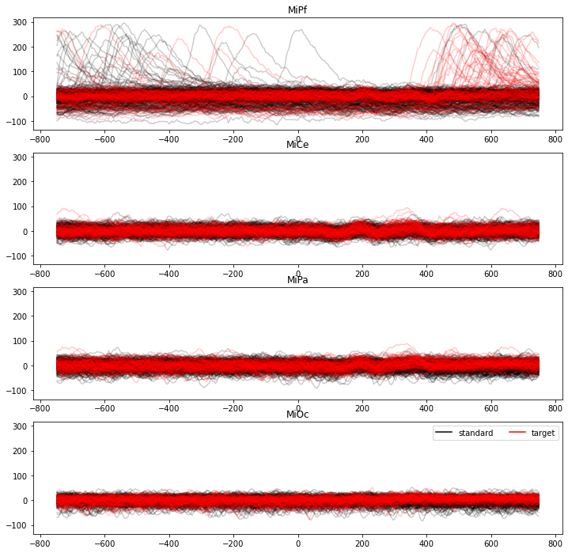
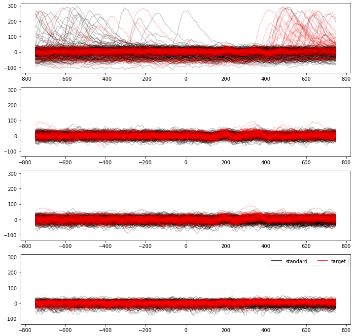

Start with spudtr epochs¶
Example: generate simulated data
[1]:
from spudtr import epf, fake_epochs_data
from spudtr import get_demo_df, DATA_DIR, P3_1500_FEATHER
n_epochs_per_category = 2
sim_epochs_df, channels = fake_epochs_data._generate(
n_epochs=n_epochs_per_category,
n_samples=32,
n_categories=2,
n_channels=4,
time="day",
epoch_id="epoch_id",
seed=10,
)
print("Simulated epochs")
epf.check_epochs(sim_epochs_df, ["channel0", "channel1"], epoch_id="epoch_id", time="day")
display(sim_epochs_df.head())
Simulated epochs
| epoch_id | day | categorical | continuous | channel0 | channel1 | channel2 | channel3 | |
|---|---|---|---|---|---|---|---|---|
| 0 | 0 | 0 | cat0 | 0.771321 | -13.170787 | -30.197057 | 19.609869 | 43.177612 |
| 1 | 0 | 1 | cat0 | 0.020752 | 4.233125 | -7.726009 | -65.298259 | 41.464399 |
| 2 | 0 | 2 | cat0 | 0.633648 | 8.191480 | 21.915223 | 18.568468 | 27.639613 |
| 3 | 0 | 3 | cat0 | 0.748804 | -48.557122 | -50.952045 | 14.317029 | -17.186617 |
| 4 | 0 | 4 | cat0 | 0.498507 | -17.193401 | 50.222266 | 0.782896 | 38.251473 |
Example: read previously saved EEG epochs
[2]:
eeg_epochs_df = get_demo_df(P3_1500_FEATHER).query("stim in ['standard', 'target']")
eeg_channels = ['MiPf', 'MiCe', 'MiPa', 'MiOc'] # subset for demonstration
epf.check_epochs(eeg_epochs_df, eeg_channels, epoch_id="epoch_id", time="time_ms")
print("EEG epochs")
display(eeg_epochs_df.head())
EEG epochs
| epoch_id | time_ms | sub_id | eeg_artifact | dblock_path | log_evcodes | log_ccodes | dblock_srate | ccode | instrument | ... | RMOc | LLTe | RLTe | LLOc | RLOc | MiOc | A2 | HEOG | rle | rhz | |
|---|---|---|---|---|---|---|---|---|---|---|---|---|---|---|---|---|---|---|---|---|---|
| 0 | 0 | -748 | sub000 | 0 | sub000/dblock_0 | 0 | 0 | 250.0 | 1 | eeg | ... | -25.093750 | -0.753906 | 1.480469 | -13.414062 | -18.937500 | -17.734375 | 5.660156 | 98.8750 | -39.50000 | 38.37500 |
| 1 | 0 | -744 | sub000 | 0 | sub000/dblock_0 | 0 | 0 | 250.0 | 1 | eeg | ... | -24.593750 | 0.502441 | -2.466797 | -17.640625 | -17.468750 | -15.304688 | 1.968750 | 104.7500 | -38.03125 | 41.28125 |
| 2 | 0 | -740 | sub000 | 0 | sub000/dblock_0 | 0 | 0 | 250.0 | 1 | eeg | ... | -16.484375 | -1.507812 | 3.947266 | -15.648438 | -10.085938 | -11.171875 | 8.367188 | 102.0625 | -33.65625 | 43.71875 |
| 3 | 0 | -736 | sub000 | 0 | sub000/dblock_0 | 0 | 0 | 250.0 | 1 | eeg | ... | -11.804688 | -15.070312 | 9.867188 | -14.906250 | -7.378906 | -8.742188 | 9.351562 | 100.5625 | -42.90625 | 37.40625 |
| 4 | 0 | -732 | sub000 | 0 | sub000/dblock_0 | 0 | 0 | 250.0 | 1 | eeg | ... | -6.394531 | -4.019531 | 9.125000 | -10.679688 | -6.886719 | -8.015625 | 8.125000 | 98.3750 | -43.87500 | 37.90625 |
5 rows × 47 columns
pandas.DataFrame.groupby().plot()¶
Quick and easy but may be slow on large data sets
Good for rough work and eye-ball checks but need so much tuning for finished figures, may as well use matplotlib from the start for that.
[3]:
import pandas as pd
print("Simulated data")
for epoch_i, data in sim_epochs_df.groupby('epoch_id'):
f = data.plot(
x='day',
y=['channel0', 'channel1'],
title=f'epoch_id: {epoch_i}',
figsize=(12,2)
)
Simulated data




matplotlib.pyplot¶
More work but flexible enough for publication quality figures.
There are lots of ways to slice the data for plotting. Some are easier, some are faster.
Example: Overplot single trial EEG
[4]:
%%time
import copy
from matplotlib import pyplot as plt
f, axs = plt.subplots(4, 1, figsize=(12,12), sharey=True)
colors = {"standard": "black", "target": "red"}
time_stamps = eeg_epochs_df.time_ms.unique()
n_times = len(time_stamps)
n_channels = len(eeg_channels)
leg_h = []
for condition, trials in eeg_epochs_df.groupby('stim'):
# reshape the epochs x channel 2-D array for overplotting
n_trials = len(trials)
trial_arry = (
trials[eeg_channels]
.to_numpy()
.reshape(int(n_trials / n_times), n_times, n_channels)
)
print(trial_arry.shape) # confirm (epochs, times, channels)
for chan_idx, channel in enumerate(eeg_channels):
axs[chan_idx].set_title(channel)
lines = axs[chan_idx].plot(
time_stamps,
trial_arry[:, :, chan_idx].squeeze().T,
color=colors[condition],
alpha=.2,
label=condition
)
# build a custom legend on the way out
leg_line = copy.copy(lines[0]) # so we don't change the original line
leg_line.set_alpha(1.0)
leg_h.append(leg_line)
leg = axs[-1].legend(handles=leg_h, loc='upper right', ncol=2);
(292, 375, 4)
(100, 375, 4)
CPU times: user 873 ms, sys: 28.3 ms, total: 902 ms
Wall time: 892 ms

[5]:
%%time
f, axs = plt.subplots(4, 1, figsize=(12,12), sharey=True)
colors = {"standard": "black", "target": "red"}
leg_h = []
for condition, trials in eeg_epochs_df.groupby('stim'):
for epoch_idx, trial in trials.groupby('epoch_id'):
for chan_idx, channel in enumerate(eeg_channels):
line = axs[chan_idx].plot(
eeg_epochs_df.time_ms.unique(),
trial[eeg_channels].to_numpy()[:, chan_idx],
color=colors[condition],
alpha=.2,
label=condition
)
# on way out, build custom legend handles current line
leg_line = copy.copy(line[0])
leg_line.set_alpha(1.0)
leg_h.append(leg_line)
leg = axs[-1].legend(handles=leg_h, loc='upper right', ncol=2);
CPU times: user 4.14 s, sys: 35.4 ms, total: 4.18 s
Wall time: 4.17 s

Preview epochs rows and columns¶
The default display is to preview five lines of the head and tail.
[6]:
display(sim_epochs_df)
| epoch_id | day | categorical | continuous | channel0 | channel1 | channel2 | channel3 | |
|---|---|---|---|---|---|---|---|---|
| 0 | 0 | 0 | cat0 | 0.771321 | -13.170787 | -30.197057 | 19.609869 | 43.177612 |
| 1 | 0 | 1 | cat0 | 0.020752 | 4.233125 | -7.726009 | -65.298259 | 41.464399 |
| 2 | 0 | 2 | cat0 | 0.633648 | 8.191480 | 21.915223 | 18.568468 | 27.639613 |
| 3 | 0 | 3 | cat0 | 0.748804 | -48.557122 | -50.952045 | 14.317029 | -17.186617 |
| 4 | 0 | 4 | cat0 | 0.498507 | -17.193401 | 50.222266 | 0.782896 | 38.251473 |
| ... | ... | ... | ... | ... | ... | ... | ... | ... |
| 123 | 3 | 27 | cat1 | 0.744603 | 33.167254 | -7.658414 | 14.630878 | 14.329468 |
| 124 | 3 | 28 | cat1 | 0.469785 | -60.531560 | 0.774228 | 1.689442 | 0.882024 |
| 125 | 3 | 29 | cat1 | 0.598256 | 16.216221 | 66.028993 | 16.373534 | 4.854384 |
| 126 | 3 | 30 | cat1 | 0.147620 | -43.268966 | 26.531028 | -20.493672 | -12.327708 |
| 127 | 3 | 31 | cat1 | 0.184035 | -48.265511 | -41.604676 | -19.770519 | 27.925069 |
128 rows × 8 columns
Select rows to display with pandas index and query¶
Show day 4 in each epoch
[7]:
display(sim_epochs_df.query("day==4"))
| epoch_id | day | categorical | continuous | channel0 | channel1 | channel2 | channel3 | |
|---|---|---|---|---|---|---|---|---|
| 4 | 0 | 4 | cat0 | 0.498507 | -17.193401 | 50.222266 | 0.782896 | 38.251473 |
| 36 | 1 | 4 | cat1 | 0.113984 | 40.336483 | -38.094588 | -26.743542 | -40.420244 |
| 68 | 2 | 4 | cat0 | 0.330719 | 66.751489 | 54.533478 | -50.413378 | 37.444479 |
| 100 | 3 | 4 | cat1 | 0.578136 | -46.419162 | 11.901780 | 46.354853 | 17.120804 |
Show epoch 2, all 32 days
[8]:
display(sim_epochs_df.query("epoch_id==2"))
| epoch_id | day | categorical | continuous | channel0 | channel1 | channel2 | channel3 | |
|---|---|---|---|---|---|---|---|---|
| 64 | 2 | 0 | cat0 | 0.039282 | -42.626415 | 14.550079 | 15.875708 | -6.495748 |
| 65 | 2 | 1 | cat0 | 0.357182 | -20.368403 | -49.758141 | -26.884315 | -35.376135 |
| 66 | 2 | 2 | cat0 | 0.079613 | 16.016544 | 80.397309 | -5.934304 | 49.342834 |
| 67 | 2 | 3 | cat0 | 0.305460 | 22.319232 | -33.105664 | -2.864275 | 21.702876 |
| 68 | 2 | 4 | cat0 | 0.330719 | 66.751489 | 54.533478 | -50.413378 | 37.444479 |
| 69 | 2 | 5 | cat0 | 0.773830 | 3.515443 | -16.681420 | 20.301246 | 21.981773 |
| 70 | 2 | 6 | cat0 | 0.039959 | 7.338436 | 28.731337 | 1.821835 | -9.630682 |
| 71 | 2 | 7 | cat0 | 0.429492 | -5.318965 | 24.456620 | -0.691236 | 15.026849 |
| 72 | 2 | 8 | cat0 | 0.314927 | -12.171886 | 1.929582 | -16.599553 | 15.598269 |
| 73 | 2 | 9 | cat0 | 0.636491 | 23.453256 | -4.992161 | -33.183697 | -41.336275 |
| 74 | 2 | 10 | cat0 | 0.346347 | 10.604328 | -28.221293 | -6.514047 | 23.541319 |
| 75 | 2 | 11 | cat0 | 0.043097 | -6.218385 | -1.607835 | -26.262671 | -26.889230 |
| 76 | 2 | 12 | cat0 | 0.879915 | -32.390922 | 33.034086 | 0.323443 | -35.350138 |
| 77 | 2 | 13 | cat0 | 0.763241 | -3.692095 | 11.163676 | -27.187405 | 22.235622 |
| 78 | 2 | 14 | cat0 | 0.878097 | -11.729466 | -26.503830 | -42.472596 | -17.185480 |
| 79 | 2 | 15 | cat0 | 0.417509 | 37.655212 | 34.741547 | 2.841249 | -28.830160 |
| 80 | 2 | 16 | cat0 | 0.605578 | 28.413782 | -36.109605 | 5.814018 | 35.637540 |
| 81 | 2 | 17 | cat0 | 0.513467 | -30.669321 | 6.295174 | 16.297053 | -52.984950 |
| 82 | 2 | 18 | cat0 | 0.597837 | 35.015051 | -26.735608 | 1.690073 | -23.112350 |
| 83 | 2 | 19 | cat0 | 0.262216 | -17.159304 | -23.480632 | 43.969650 | 33.727257 |
| 84 | 2 | 20 | cat0 | 0.300871 | 3.994125 | 32.391920 | -19.079076 | 80.150553 |
| 85 | 2 | 21 | cat0 | 0.025400 | 36.082316 | -13.885227 | 33.285157 | 1.933365 |
| 86 | 2 | 22 | cat0 | 0.303063 | -30.742589 | -45.452270 | -29.778975 | 27.404529 |
| 87 | 2 | 23 | cat0 | 0.242076 | 4.811975 | -16.161556 | -20.470244 | -29.910186 |
| 88 | 2 | 24 | cat0 | 0.557578 | -33.914259 | 22.698656 | -12.278076 | 62.251460 |
| 89 | 2 | 25 | cat0 | 0.565507 | -58.238990 | -21.881977 | -7.424258 | -17.705596 |
| 90 | 2 | 26 | cat0 | 0.475132 | 29.597935 | 36.443480 | 45.835534 | -84.480037 |
| 91 | 2 | 27 | cat0 | 0.292798 | 0.846821 | 30.248489 | -19.483151 | 3.286333 |
| 92 | 2 | 28 | cat0 | 0.064251 | -24.671028 | 2.198490 | -38.070466 | 4.280079 |
| 93 | 2 | 29 | cat0 | 0.978819 | -47.596553 | 35.211972 | 22.646282 | -23.521067 |
| 94 | 2 | 30 | cat0 | 0.339708 | -12.044185 | 55.888550 | -0.717253 | 7.728322 |
| 95 | 2 | 31 | cat0 | 0.495049 | 40.265379 | -59.509095 | -46.726274 | 39.387682 |
Unhide rows and columns¶
Use pandas.option_context to control the number of rows and columns displayed
[9]:
with pd.option_context('display.max_rows', None, 'display.max_columns', None):
display(sim_epochs_df)
| epoch_id | day | categorical | continuous | channel0 | channel1 | channel2 | channel3 | |
|---|---|---|---|---|---|---|---|---|
| 0 | 0 | 0 | cat0 | 0.771321 | -13.170787 | -30.197057 | 19.609869 | 43.177612 |
| 1 | 0 | 1 | cat0 | 0.020752 | 4.233125 | -7.726009 | -65.298259 | 41.464399 |
| 2 | 0 | 2 | cat0 | 0.633648 | 8.191480 | 21.915223 | 18.568468 | 27.639613 |
| 3 | 0 | 3 | cat0 | 0.748804 | -48.557122 | -50.952045 | 14.317029 | -17.186617 |
| 4 | 0 | 4 | cat0 | 0.498507 | -17.193401 | 50.222266 | 0.782896 | 38.251473 |
| 5 | 0 | 5 | cat0 | 0.224797 | -39.613426 | 34.911711 | -29.091170 | -9.864961 |
| 6 | 0 | 6 | cat0 | 0.198063 | 37.086160 | -3.977208 | -29.511844 | -4.390224 |
| 7 | 0 | 7 | cat0 | 0.760531 | 73.959752 | -8.707374 | 12.375981 | 31.753099 |
| 8 | 0 | 8 | cat0 | 0.169111 | 41.496967 | -28.605973 | -18.429145 | -3.332413 |
| 9 | 0 | 9 | cat0 | 0.088340 | 10.386993 | 17.641218 | 25.112453 | -1.166434 |
| 10 | 0 | 10 | cat0 | 0.685360 | 30.675483 | 2.064044 | -18.708570 | -9.670905 |
| 11 | 0 | 11 | cat0 | 0.953393 | 5.004308 | 42.361929 | -10.895586 | -19.972972 |
| 12 | 0 | 12 | cat0 | 0.003948 | 49.701499 | -20.586468 | 22.784140 | -21.138600 |
| 13 | 0 | 13 | cat0 | 0.512192 | 20.036688 | 16.438318 | -1.017810 | -10.612882 |
| 14 | 0 | 14 | cat0 | 0.812621 | -6.898399 | -1.091476 | -4.992021 | 4.557823 |
| 15 | 0 | 15 | cat0 | 0.612526 | -33.886536 | -25.410488 | 8.087173 | -9.126005 |
| 16 | 0 | 16 | cat0 | 0.721755 | -19.198878 | 57.069121 | 11.259167 | -35.365631 |
| 17 | 0 | 17 | cat0 | 0.291876 | 9.414916 | 8.388162 | -2.517457 | -4.473981 |
| 18 | 0 | 18 | cat0 | 0.917774 | -36.775079 | 18.607635 | 6.783790 | -6.752906 |
| 19 | 0 | 19 | cat0 | 0.714576 | -6.653794 | -32.057031 | -3.476422 | 2.104631 |
| 20 | 0 | 20 | cat0 | 0.542544 | 40.197789 | -21.678622 | 12.348072 | 13.562017 |
| 21 | 0 | 21 | cat0 | 0.142170 | 0.879291 | 2.524187 | 8.634313 | 8.822078 |
| 22 | 0 | 22 | cat0 | 0.373341 | 59.561572 | -17.533655 | 15.128144 | -24.825300 |
| 23 | 0 | 23 | cat0 | 0.674134 | 43.414968 | 18.060668 | 24.128021 | -24.854137 |
| 24 | 0 | 24 | cat0 | 0.441833 | -8.628882 | 13.150957 | -30.918246 | -14.775224 |
| 25 | 0 | 25 | cat0 | 0.434014 | -40.779317 | -23.470296 | -40.730927 | -22.548613 |
| 26 | 0 | 26 | cat0 | 0.617767 | -1.441240 | 5.788080 | -7.995056 | -47.651424 |
| 27 | 0 | 27 | cat0 | 0.513138 | -14.423620 | 0.120747 | -5.138784 | -14.061921 |
| 28 | 0 | 28 | cat0 | 0.650397 | 11.332593 | -4.922259 | 13.871567 | -42.933554 |
| 29 | 0 | 29 | cat0 | 0.601039 | 48.432239 | -34.464368 | -36.595666 | -37.904906 |
| 30 | 0 | 30 | cat0 | 0.805223 | -33.693121 | -25.065255 | 5.777185 | -37.207459 |
| 31 | 0 | 31 | cat0 | 0.521647 | -11.661838 | 6.313522 | 13.063512 | -31.593479 |
| 32 | 1 | 0 | cat1 | 0.908649 | 9.970498 | 30.419539 | -49.048324 | -33.965932 |
| 33 | 1 | 1 | cat1 | 0.319236 | 34.049195 | -29.105935 | 13.048118 | -27.328382 |
| 34 | 1 | 2 | cat1 | 0.090459 | 15.321432 | 36.515447 | 41.934582 | -7.807197 |
| 35 | 1 | 3 | cat1 | 0.300700 | 12.428929 | 5.479421 | 3.740003 | 24.439636 |
| 36 | 1 | 4 | cat1 | 0.113984 | 40.336483 | -38.094588 | -26.743542 | -40.420244 |
| 37 | 1 | 5 | cat1 | 0.828681 | 14.805460 | 9.701698 | -17.306800 | 31.785850 |
| 38 | 1 | 6 | cat1 | 0.046896 | -7.110126 | 26.573246 | -2.248466 | 15.736222 |
| 39 | 1 | 7 | cat1 | 0.626287 | 1.718555 | 7.931841 | -15.653293 | 16.004671 |
| 40 | 1 | 8 | cat1 | 0.547586 | -21.212143 | 69.573820 | -96.132040 | -7.606741 |
| 41 | 1 | 9 | cat1 | 0.819287 | 16.399945 | 9.260030 | 43.881330 | 5.763669 |
| 42 | 1 | 10 | cat1 | 0.198948 | 28.275012 | 26.776921 | -14.007079 | 16.887654 |
| 43 | 1 | 11 | cat1 | 0.856850 | -89.387903 | 0.330681 | -5.370591 | 18.823529 |
| 44 | 1 | 12 | cat1 | 0.351653 | 36.544466 | 29.402224 | 27.742429 | -10.198459 |
| 45 | 1 | 13 | cat1 | 0.754648 | -1.695622 | -71.867160 | 7.057343 | 22.115369 |
| 46 | 1 | 14 | cat1 | 0.295962 | 13.826654 | -25.725675 | -14.658248 | 36.087088 |
| 47 | 1 | 15 | cat1 | 0.883936 | 19.871220 | -10.928343 | -2.789446 | 29.116786 |
| 48 | 1 | 16 | cat1 | 0.325512 | -68.853100 | 15.117807 | 16.062041 | 21.116362 |
| 49 | 1 | 17 | cat1 | 0.165016 | -35.877879 | 5.649936 | 16.525341 | -18.149632 |
| 50 | 1 | 18 | cat1 | 0.392529 | -9.993035 | 32.556812 | -5.745662 | 0.141316 |
| 51 | 1 | 19 | cat1 | 0.093460 | -23.741723 | 10.708172 | 23.840929 | 4.411018 |
| 52 | 1 | 20 | cat1 | 0.821106 | 8.225183 | 6.219887 | 23.552895 | -13.876174 |
| 53 | 1 | 21 | cat1 | 0.151152 | -15.447298 | -4.351936 | -14.631733 | 6.556765 |
| 54 | 1 | 22 | cat1 | 0.384114 | -51.332136 | 4.917128 | -30.175946 | 5.062608 |
| 55 | 1 | 23 | cat1 | 0.944261 | 18.368919 | 24.885375 | 9.827261 | -1.499915 |
| 56 | 1 | 24 | cat1 | 0.987625 | 33.003881 | 22.658999 | 17.371454 | -4.497184 |
| 57 | 1 | 25 | cat1 | 0.456305 | 16.930576 | 26.384571 | -13.797766 | -1.059842 |
| 58 | 1 | 26 | cat1 | 0.826123 | -21.383983 | -7.198689 | -13.074477 | 1.008496 |
| 59 | 1 | 27 | cat1 | 0.251374 | -7.825784 | -20.851699 | 16.088057 | -10.997280 |
| 60 | 1 | 28 | cat1 | 0.597372 | 16.452842 | -14.142002 | 4.710450 | -12.726343 |
| 61 | 1 | 29 | cat1 | 0.902832 | 18.095972 | 10.484292 | 40.763674 | -1.525490 |
| 62 | 1 | 30 | cat1 | 0.534558 | 30.205834 | 48.343719 | 15.460357 | -33.712626 |
| 63 | 1 | 31 | cat1 | 0.590201 | -8.832780 | 7.180178 | 71.523739 | -55.720745 |
| 64 | 2 | 0 | cat0 | 0.039282 | -42.626415 | 14.550079 | 15.875708 | -6.495748 |
| 65 | 2 | 1 | cat0 | 0.357182 | -20.368403 | -49.758141 | -26.884315 | -35.376135 |
| 66 | 2 | 2 | cat0 | 0.079613 | 16.016544 | 80.397309 | -5.934304 | 49.342834 |
| 67 | 2 | 3 | cat0 | 0.305460 | 22.319232 | -33.105664 | -2.864275 | 21.702876 |
| 68 | 2 | 4 | cat0 | 0.330719 | 66.751489 | 54.533478 | -50.413378 | 37.444479 |
| 69 | 2 | 5 | cat0 | 0.773830 | 3.515443 | -16.681420 | 20.301246 | 21.981773 |
| 70 | 2 | 6 | cat0 | 0.039959 | 7.338436 | 28.731337 | 1.821835 | -9.630682 |
| 71 | 2 | 7 | cat0 | 0.429492 | -5.318965 | 24.456620 | -0.691236 | 15.026849 |
| 72 | 2 | 8 | cat0 | 0.314927 | -12.171886 | 1.929582 | -16.599553 | 15.598269 |
| 73 | 2 | 9 | cat0 | 0.636491 | 23.453256 | -4.992161 | -33.183697 | -41.336275 |
| 74 | 2 | 10 | cat0 | 0.346347 | 10.604328 | -28.221293 | -6.514047 | 23.541319 |
| 75 | 2 | 11 | cat0 | 0.043097 | -6.218385 | -1.607835 | -26.262671 | -26.889230 |
| 76 | 2 | 12 | cat0 | 0.879915 | -32.390922 | 33.034086 | 0.323443 | -35.350138 |
| 77 | 2 | 13 | cat0 | 0.763241 | -3.692095 | 11.163676 | -27.187405 | 22.235622 |
| 78 | 2 | 14 | cat0 | 0.878097 | -11.729466 | -26.503830 | -42.472596 | -17.185480 |
| 79 | 2 | 15 | cat0 | 0.417509 | 37.655212 | 34.741547 | 2.841249 | -28.830160 |
| 80 | 2 | 16 | cat0 | 0.605578 | 28.413782 | -36.109605 | 5.814018 | 35.637540 |
| 81 | 2 | 17 | cat0 | 0.513467 | -30.669321 | 6.295174 | 16.297053 | -52.984950 |
| 82 | 2 | 18 | cat0 | 0.597837 | 35.015051 | -26.735608 | 1.690073 | -23.112350 |
| 83 | 2 | 19 | cat0 | 0.262216 | -17.159304 | -23.480632 | 43.969650 | 33.727257 |
| 84 | 2 | 20 | cat0 | 0.300871 | 3.994125 | 32.391920 | -19.079076 | 80.150553 |
| 85 | 2 | 21 | cat0 | 0.025400 | 36.082316 | -13.885227 | 33.285157 | 1.933365 |
| 86 | 2 | 22 | cat0 | 0.303063 | -30.742589 | -45.452270 | -29.778975 | 27.404529 |
| 87 | 2 | 23 | cat0 | 0.242076 | 4.811975 | -16.161556 | -20.470244 | -29.910186 |
| 88 | 2 | 24 | cat0 | 0.557578 | -33.914259 | 22.698656 | -12.278076 | 62.251460 |
| 89 | 2 | 25 | cat0 | 0.565507 | -58.238990 | -21.881977 | -7.424258 | -17.705596 |
| 90 | 2 | 26 | cat0 | 0.475132 | 29.597935 | 36.443480 | 45.835534 | -84.480037 |
| 91 | 2 | 27 | cat0 | 0.292798 | 0.846821 | 30.248489 | -19.483151 | 3.286333 |
| 92 | 2 | 28 | cat0 | 0.064251 | -24.671028 | 2.198490 | -38.070466 | 4.280079 |
| 93 | 2 | 29 | cat0 | 0.978819 | -47.596553 | 35.211972 | 22.646282 | -23.521067 |
| 94 | 2 | 30 | cat0 | 0.339708 | -12.044185 | 55.888550 | -0.717253 | 7.728322 |
| 95 | 2 | 31 | cat0 | 0.495049 | 40.265379 | -59.509095 | -46.726274 | 39.387682 |
| 96 | 3 | 0 | cat1 | 0.977081 | 12.074073 | 34.700668 | 10.390547 | -40.470761 |
| 97 | 3 | 1 | cat1 | 0.440774 | -11.182842 | 18.278468 | 28.270935 | 15.004106 |
| 98 | 3 | 2 | cat1 | 0.318273 | -20.160703 | -9.696037 | -11.564305 | -29.537599 |
| 99 | 3 | 3 | cat1 | 0.519797 | 3.174362 | 19.924368 | 46.806263 | 44.579382 |
| 100 | 3 | 4 | cat1 | 0.578136 | -46.419162 | 11.901780 | 46.354853 | 17.120804 |
| 101 | 3 | 5 | cat1 | 0.853934 | 40.344195 | -17.283506 | -20.750630 | -15.386256 |
| 102 | 3 | 6 | cat1 | 0.068097 | 15.095675 | 44.646552 | 25.935554 | 8.273473 |
| 103 | 3 | 7 | cat1 | 0.464531 | 35.830518 | 4.207406 | -62.933756 | -11.678446 |
| 104 | 3 | 8 | cat1 | 0.781949 | -16.905170 | 35.649503 | 5.108841 | 19.455882 |
| 105 | 3 | 9 | cat1 | 0.718603 | 25.644863 | -7.372362 | -22.734890 | -0.732856 |
| 106 | 3 | 10 | cat1 | 0.586022 | 20.637142 | -49.067599 | 29.034312 | 39.254615 |
| 107 | 3 | 11 | cat1 | 0.037094 | -45.992062 | 7.343943 | -26.235751 | 79.877324 |
| 108 | 3 | 12 | cat1 | 0.350656 | 4.468821 | -7.052467 | 30.835212 | 10.281792 |
| 109 | 3 | 13 | cat1 | 0.563191 | 9.453335 | -37.824834 | -24.086689 | 26.178905 |
| 110 | 3 | 14 | cat1 | 0.299730 | -17.247530 | -50.759038 | -12.849102 | 11.321910 |
| 111 | 3 | 15 | cat1 | 0.512334 | -10.805134 | 18.493528 | -22.662475 | -15.199781 |
| 112 | 3 | 16 | cat1 | 0.673467 | 13.085559 | 38.090738 | 6.614907 | 14.490484 |
| 113 | 3 | 17 | cat1 | 0.159194 | -1.137536 | 41.920139 | -41.193426 | 29.307181 |
| 114 | 3 | 18 | cat1 | 0.050478 | -30.141491 | 16.026749 | 19.402750 | 25.405239 |
| 115 | 3 | 19 | cat1 | 0.337816 | 17.743593 | 0.123061 | -20.205054 | 4.699553 |
| 116 | 3 | 20 | cat1 | 0.108064 | 6.834521 | 5.682595 | 67.255995 | -4.635653 |
| 117 | 3 | 21 | cat1 | 0.178903 | 7.475360 | 1.343241 | -7.394614 | 54.904415 |
| 118 | 3 | 22 | cat1 | 0.885827 | 2.872897 | 23.840558 | -22.908130 | 27.873339 |
| 119 | 3 | 23 | cat1 | 0.365365 | 13.470652 | -14.794222 | 14.423662 | 41.476125 |
| 120 | 3 | 24 | cat1 | 0.218769 | -8.580060 | -37.847692 | -24.953976 | -19.567841 |
| 121 | 3 | 25 | cat1 | 0.752496 | -25.882749 | -6.577808 | 17.795677 | 42.685600 |
| 122 | 3 | 26 | cat1 | 0.106880 | -22.254745 | 5.918167 | -13.463374 | -43.765331 |
| 123 | 3 | 27 | cat1 | 0.744603 | 33.167254 | -7.658414 | 14.630878 | 14.329468 |
| 124 | 3 | 28 | cat1 | 0.469785 | -60.531560 | 0.774228 | 1.689442 | 0.882024 |
| 125 | 3 | 29 | cat1 | 0.598256 | 16.216221 | 66.028993 | 16.373534 | 4.854384 |
| 126 | 3 | 30 | cat1 | 0.147620 | -43.268966 | 26.531028 | -20.493672 | -12.327708 |
| 127 | 3 | 31 | cat1 | 0.184035 | -48.265511 | -41.604676 | -19.770519 | 27.925069 |